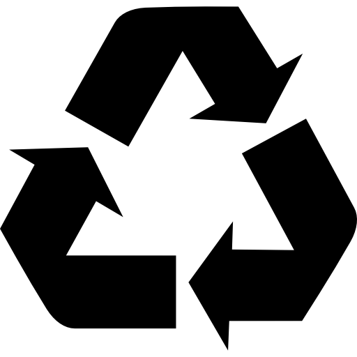

Treasures of Bohol
Treasures of Bohol
Treasures of Bohol
Treasures of Bohol

Celebrating Boholano culture while building a sustainable future for our communities
Treasures of Bohol is dedicated to promoting locally made foods and souvenirs that showcase the rich cultural heritage of Bohol. We highlight popular Boholano products such as delicacies, handmade crafts, and traditional souvenirs, emphasizing their cultural importance and how they represent the identity and creativity of the people of Bohol.
We envision a thriving Bohol where traditional craftsmanship and local food production are valued and preserved, where artisans and producers earn fair income, and where every product tells a story of sustainability, culture, and community pride.
Aligned with the United Nations Sustainable Development Goals, we're working towards a better future for Bohol and its people.
We promote sustained, inclusive and sustainable economic growth, full and productive employment and decent work for all. By supporting local artisans and producers, we create sustainable livelihood opportunities and fair income for Boholano families.
We work to make our communities inclusive, safe, resilient and sustainable. Our initiative strengthens local economies, preserves cultural heritage, and builds stronger community bonds through fair trade practices and local empowerment.

We ensure sustainable consumption and production patterns by promoting traditional methods that use natural, locally-sourced materials. Our products are made with eco-friendly practices that respect the environment and minimize waste.

Local Artisans Supported

Natural Materials

Traditional Techniques

Income Growth for Families
The products we showcase are more than just items for sale - they are living expressions of Boholano identity and cultural heritage. Each delicacy recipe has been perfected over generations, each weaving pattern tells a story, and each craft technique represents knowledge passed from master to apprentice.
By supporting these products, you're helping preserve traditional skills that might otherwise be lost to modernization. You're ensuring that young Boholanos can continue to learn these crafts from their elders, maintaining an unbroken chain of cultural transmission that stretches back centuries.
Our initiative also promotes responsible consumption by encouraging the use of natural, biodegradable materials and traditional production methods that work in harmony with nature. This is sustainability rooted in cultural wisdom - our ancestors knew how to create beautiful, useful things without harming the environment.